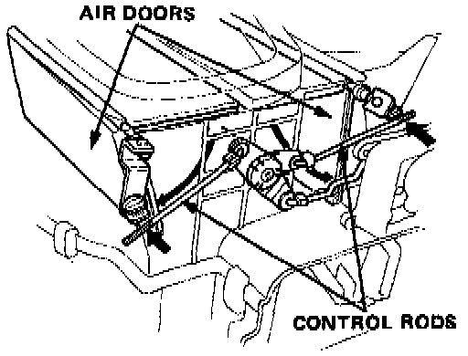

Disassembly

Blower Disassembly
NOTE:
- Before reassembly, make sure that the air door and linkage moves smoothly without binding.
- When re-attaching the actuator, make sure its positioning will not allow the air door to be pulled too far. Attach the actuator and all linkage, then apply battery voltage and watch the door movement. If necessary, loosen the holding screw and move the actuator up or down.

To adjust the control rod:
Connect the REC control motor connector to the main wire harness, push the FRESH/REC switch to "FRESH" and open the air doors. Then connect the control rod to the arm while holding the air doors open.